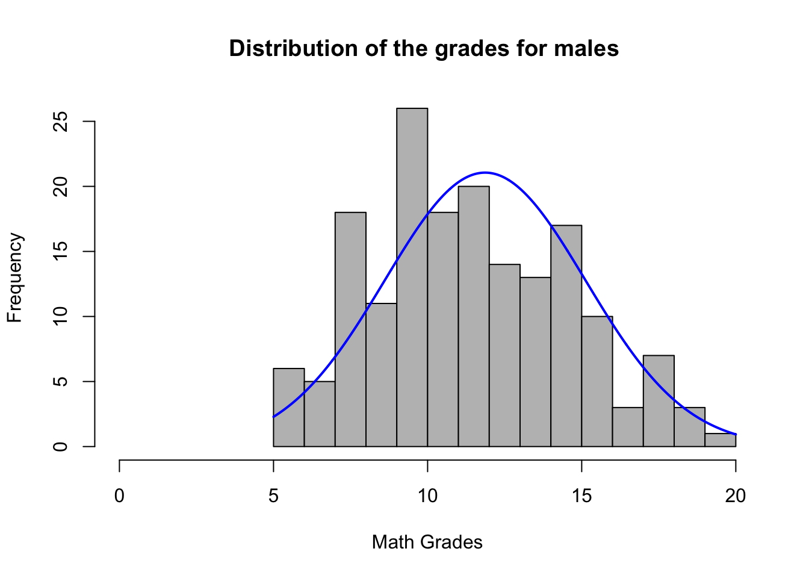
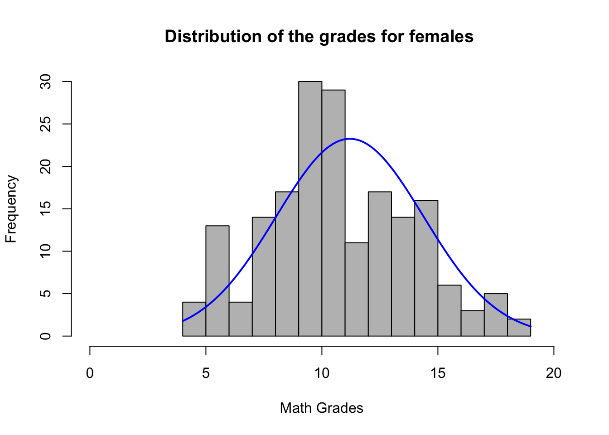

Code
#install.packages("ggstatplot")
#install.packages("car")
#install.packages("rstatix")
#install.packages(tidyVerse)This is also called the independent sample t test. It is used to see whether the unknown population means of two groups are equal or different. This test requires one variable which can be the exposure x and another variable which can be the outcome y. If you have more than two groups then analysis of variance (ANOVA) will be more suitable. If data is nonparametric then an alternative test to use would be the Mann Whitney U test or a permutation test.[@cressie1986].
There are two types of t tests, the first being the Student’s t test, which assumes the variance of the two groups is equal, the second being the Welch’s t test (default in R), which assumes the variance in the two groups is different.
In this article we will be discussing the Student’s t test.
Measurements for one observation do not affect measurements for any other observation (assumes independence).
Data in each group must be obtained via a random sample from the population.
Data in each group are normally distributed.
Data values are continuous.
The variances for the two independent groups are equal in the Student’s t test.
There should be no significant outliers.
(H_0): the mean of group A (m_A) is equal to the mean of group B (m_B)- two tailed test.
(H_0): the mean of group A (m_A) is greater than or equal to mean of group B (m_B)- one tailed test.
(H_0): the mean of group A (m_A) is less than or equal to the mean of group B (m_B)- one tailed test.
The corresponding alternative hypotheses would be as follows:
For the Student’s t test which assumes equal variance the following is how the |t| statistic may be calculated using groups A and B as examples:
t ={ {\bar{x}_{1} - \bar{x}_{2}} \over \sqrt{ s^2( {1 \over n_1 } + {1 \over n_2}) }}
This can be described as the sample mean difference divided by the sample standard deviation of the sample mean difference where:
m_A and m_B are the mean values of A and B,
n_A and n_B are the seize of group A and B,
S^2 is the estimator for the pooled variance,
with the degrees of freedom (df) = n_A + n_B - 2,
and s^2 is calculated as follows:
s^2 = { {\displaystyle\sum_{i=1}^{n_1} { (x_i-\bar{x}_1)^2} + \displaystyle\sum_{j=1}^{n_2}{ (x_j-\bar{x}_2)^2}} \over {n_{1} + n_{2} - 2 }}
Results for both Students t test and Welch’s t test are usually similar unless the group sizes and standard deviations are different.
What if the data is not independent?
If the data is not independent such as paired data in the form of matched pairs which are correlated, we use the paired t test. This test checks whether the means of two paired groups are different from each other. It’s usually used in clinical trial studies with a “before and after” or case control studies with matched pairs. For this test we only assume the difference of each pair to be normally distributed (the paired groups are the ones important for analysis) unlike the independent t test which assumes that data from both samples are independent and variances are equal.[@fralick]
tidyverse: data manipulation and visualization.rstatix: providing pipe friendly R functions for easy statistical analyses.car: providing variance tests.#install.packages("ggstatplot")
#install.packages("car")
#install.packages("rstatix")
#install.packages(tidyVerse)This example dataset sourced from kaggle was obtained from surveys of students in Math and Portuguese classes in secondary school. It contains demographic information on gender, social and study information.
# load the dataset
stu_math <- read.csv("student-mat.csv")# load relevant libraries
library(rcompanion)
library(car)
library (gt)
library(gtsummary)
library(ggpubr)
library(rstatix)
library(tidyverse)Checking the data
# check the data
glimpse(stu_math)Rows: 395
Columns: 33
$ school <chr> "GP", "GP", "GP", "GP", "GP", "GP", "GP", "GP", "GP", "GP",…
$ sex <chr> "F", "F", "F", "F", "F", "M", "M", "F", "M", "M", "F", "F",…
$ age <int> 18, 17, 15, 15, 16, 16, 16, 17, 15, 15, 15, 15, 15, 15, 15,…
$ address <chr> "U", "U", "U", "U", "U", "U", "U", "U", "U", "U", "U", "U",…
$ famsize <chr> "GT3", "GT3", "LE3", "GT3", "GT3", "LE3", "LE3", "GT3", "LE…
$ Pstatus <chr> "A", "T", "T", "T", "T", "T", "T", "A", "A", "T", "T", "T",…
$ Medu <int> 4, 1, 1, 4, 3, 4, 2, 4, 3, 3, 4, 2, 4, 4, 2, 4, 4, 3, 3, 4,…
$ Fedu <int> 4, 1, 1, 2, 3, 3, 2, 4, 2, 4, 4, 1, 4, 3, 2, 4, 4, 3, 2, 3,…
$ Mjob <chr> "at_home", "at_home", "at_home", "health", "other", "servic…
$ Fjob <chr> "teacher", "other", "other", "services", "other", "other", …
$ reason <chr> "course", "course", "other", "home", "home", "reputation", …
$ guardian <chr> "mother", "father", "mother", "mother", "father", "mother",…
$ traveltime <int> 2, 1, 1, 1, 1, 1, 1, 2, 1, 1, 1, 3, 1, 2, 1, 1, 1, 3, 1, 1,…
$ studytime <int> 2, 2, 2, 3, 2, 2, 2, 2, 2, 2, 2, 3, 1, 2, 3, 1, 3, 2, 1, 1,…
$ failures <int> 0, 0, 3, 0, 0, 0, 0, 0, 0, 0, 0, 0, 0, 0, 0, 0, 0, 0, 3, 0,…
$ schoolsup <chr> "yes", "no", "yes", "no", "no", "no", "no", "yes", "no", "n…
$ famsup <chr> "no", "yes", "no", "yes", "yes", "yes", "no", "yes", "yes",…
$ paid <chr> "no", "no", "yes", "yes", "yes", "yes", "no", "no", "yes", …
$ activities <chr> "no", "no", "no", "yes", "no", "yes", "no", "no", "no", "ye…
$ nursery <chr> "yes", "no", "yes", "yes", "yes", "yes", "yes", "yes", "yes…
$ higher <chr> "yes", "yes", "yes", "yes", "yes", "yes", "yes", "yes", "ye…
$ internet <chr> "no", "yes", "yes", "yes", "no", "yes", "yes", "no", "yes",…
$ romantic <chr> "no", "no", "no", "yes", "no", "no", "no", "no", "no", "no"…
$ famrel <int> 4, 5, 4, 3, 4, 5, 4, 4, 4, 5, 3, 5, 4, 5, 4, 4, 3, 5, 5, 3,…
$ freetime <int> 3, 3, 3, 2, 3, 4, 4, 1, 2, 5, 3, 2, 3, 4, 5, 4, 2, 3, 5, 1,…
$ goout <int> 4, 3, 2, 2, 2, 2, 4, 4, 2, 1, 3, 2, 3, 3, 2, 4, 3, 2, 5, 3,…
$ Dalc <int> 1, 1, 2, 1, 1, 1, 1, 1, 1, 1, 1, 1, 1, 1, 1, 1, 1, 1, 2, 1,…
$ Walc <int> 1, 1, 3, 1, 2, 2, 1, 1, 1, 1, 2, 1, 3, 2, 1, 2, 2, 1, 4, 3,…
$ health <int> 3, 3, 3, 5, 5, 5, 3, 1, 1, 5, 2, 4, 5, 3, 3, 2, 2, 4, 5, 5,…
$ absences <int> 6, 4, 10, 2, 4, 10, 0, 6, 0, 0, 0, 4, 2, 2, 0, 4, 6, 4, 16,…
$ G1 <int> 5, 5, 7, 15, 6, 15, 12, 6, 16, 14, 10, 10, 14, 10, 14, 14, …
$ G2 <int> 6, 5, 8, 14, 10, 15, 12, 5, 18, 15, 8, 12, 14, 10, 16, 14, …
$ G3 <int> 6, 6, 10, 15, 10, 15, 11, 6, 19, 15, 9, 12, 14, 11, 16, 14,…In total there are 395 observations and 33 variables. We will drop the variables we do not need and keep the variables that will help us answer the following: Is there a difference between boys and girls in math final grades?
H_0: There is no statistical difference between the final grades between boys and girls.
H_1: There is a statistically significant difference in the final grades between the two groups.
# creating a subset of the data
math = subset(stu_math, select= c(sex,G3))
glimpse(math)Rows: 395
Columns: 2
$ sex <chr> "F", "F", "F", "F", "F", "M", "M", "F", "M", "M", "F", "F", "M", "…
$ G3 <int> 6, 6, 10, 15, 10, 15, 11, 6, 19, 15, 9, 12, 14, 11, 16, 14, 14, 10…Summary statistics- the dependent variable is continuous (grades=G3) and the independent variable is character but binary (sex).
# summarizing our data
summary(math) sex G3
Length:395 Min. : 0.00
Class :character 1st Qu.: 8.00
Mode :character Median :11.00
Mean :10.42
3rd Qu.:14.00
Max. :20.00 We see that data ranges from 0-20 with 0 being people who were absent and could not take the test therefore missing data. We remove these 0 values before running the t test. However other models should be considered such as the zero inflated model to differentiate those who truly got a 0 and those who were not present to take test.
# creating a boxplot to visualize the data with no outliers
math2 = subset(math, G3>0)
boxplot(G3 ~ sex,data=math2)
Visualizing the data- we can use histograms and box lots to visualize the data to check for outliers and distribution thus checking for normality.
# Histograms for data by groups
male = math2$G3[math2$sex == "M"]
female = math2$G3[math2$sex == "F"]
# plotting distribution for males
plotNormalHistogram(male, breaks= 20,xlim=c(0,20),main="Distribution of the grades for males ", xlab= "Math Grades")
Final grades for males seem to be normally distributed from 0-20. Data is approximately normal because we have a large amount of bins.
# plotting distribution for females
plotNormalHistogram(female, breaks= 20,xlim=c(0,20),main="Distribution of the grades for females ", xlab= "Math Grades")
Final grades for females also appear to be normally distributed. The final score across both is almost evenly distributed. However there seem to be a significant number of individuals who failed the test (grade=0).
# plotting bar plot to see the distribution in sample size
sample_size = table(math2$sex)
barplot(sample_size,main= "Distribution of sample size by sex")The bar graph shows that there are slightly more females in the sample than males.
Identifying outliers
# creating a boxplot to visualize the outliers (G3=0)
boxplot(G3 ~ sex,data=math2)The box plot shows us that there are no outliers as these have been removed in terms of people who had a score of 0. This score is not truly reflective of the performance between boys and girls as a grade of 0 may represent absentia or other reasons for the test not been taken. Therefore we opt to drop the outliers. We will compare to see if this decision affects the mean which appears similar from the above plot.
# finding the mean for the groups with outliers
mean(math$G3[math$sex=="F"])[1] 9.966346mean(math$G3[math$sex=="M"])[1] 10.91444# finding the mean for the groups without outliers
mean(math2$G3[math2$sex=="F"])[1] 11.20541mean(math2$G3[math2$sex=="M"])[1] 11.86628The mean has increased slightly and the difference decreased after removing the outliers but the distribution is still the same.
Check the equality of variances (homogeneity)
We can use the Levene’s test or the Bartlett’s test to check for homogeneity of variances. The former is in the car library and the later in the rstatix library. If the variances are homogeneous the p value will be greater than 0.05.
Other tests include F test 2 sided, Brown-Forsythe and O’Brien but we shall not cover these.
# running the Bartleet's test to check equal variance
bartlett.test(G3~sex, data=math2)
Bartlett test of homogeneity of variances
data: G3 by sex
Bartlett's K-squared = 0.12148, df = 1, p-value = 0.7274# running the Levene's test to check equal variance
math2 %>% levene_test(G3~sex)# A tibble: 1 × 4
df1 df2 statistic p
<int> <int> <dbl> <dbl>
1 1 355 0.614 0.434The p value is greater than 0.05 suggesting there is no difference between the variances of the two groups.
Data is continuous(G3)
Data is normally distributed
Data is independent (males and females distinct not the same individual)
No significant outliers
There are equal variances
As the assumptions are met we go ahead to perform the Student’s t test.
Since the default is the Welch t test we use the \color{blue}{\text{var.eqaul = TRUE }} code to signify a Student’s t test. There is a t.test() function in stats package and a t_test() in the rstatix package. For this analysis we use the rstatix method as it comes out as a table.
# perfoming the two sample t test
stat.test <- math2 %>%
t_test(G3~ sex, var.equal=TRUE) %>%
add_significance()
stat.test# A tibble: 1 × 9
.y. group1 group2 n1 n2 statistic df p p.signif
<chr> <chr> <chr> <int> <int> <dbl> <dbl> <dbl> <chr>
1 G3 F M 185 172 -1.94 355 0.0531 ns stat.test$statistic t
-1.940477 The results are represented as follows;
y - dependent variable
group1, group 2 - compared groups(independent variables)
df - degrees of freedom
p - p value
gtsummary table of results
math2 |>
tbl_summary(
by = sex,
statistic =
list(
all_continuous() ~ "{mean} ({sd})",
all_dichotomous() ~ "{p}%")
) |>
add_n() |>
add_overall() |>
add_difference()| Characteristic | N | Overall, N = 3571 | F, N = 1851 | M, N = 1721 | Difference2 | 95% CI2,3 | p-value2 |
|---|---|---|---|---|---|---|---|
| G3 | 357 | 12 (3) | 11 (3) | 12 (3) | -0.66 | -1.3, 0.01 | 0.053 |
| 1 Mean (SD) | |||||||
| 2 Welch Two Sample t-test | |||||||
| 3 CI = Confidence Interval | |||||||
Interpretation of results
For the two sample t test with t(355) = -1.940477, p < 0.0531, the p value is greater than our alpha of 0.05 , we fail to reject the null hypothesis and conclude that there is no statistical difference between the means of the two groups. There is no difference in final grades between boys and girls. (A significant |t| would be 1.96).
Effect size
Cohen’s d can be an used as an effect size statistic for the two sample t test. It is the difference between the means of each group divided by the pooled standard deviation.
d= {m_A-m_B \over SD_pooled}
It ranges from 0 to infinity, with 0 indicating no effect where the means are equal. 0.5 means that the means differ by half the standard deviation of the data and 1 means they differ by 1 standard deviation. It is divided into small, medium or large using the following cut off points.
small 0.2-<0.5
medium 0.5-<0.8
large >=0.8
For the above test the following is how we can find the effect size;
#perfoming cohen's d
math2 %>%
cohens_d(G3~sex,var.equal = TRUE)# A tibble: 1 × 7
.y. group1 group2 effsize n1 n2 magnitude
* <chr> <chr> <chr> <dbl> <int> <int> <ord>
1 G3 F M -0.206 185 172 small The effect size is small d= -0.20.
In conclusion, a two-samples t-test showed that the difference was not statistically significant, t(355) = -1.940477, p < 0.0531, d = -0.20; where, t(355) is shorthand notation for a t-statistic that has 355 degrees of freedom and d is Cohen’s d. We can conclude that the females mean final grade is greater than males final grade (d= -0.20) but this result is not significant.
What if it is one tailed t test?
Use the \color{blue}{\text{alternative =}} option to determine if one group is \color{blue}{\text{"less"}} or \color{blue}{\text{"greater"}}. For example if we want to see whether the final grades for females are greater than males we can use the following code:
# perfoming the one tailed two sample t test
stat.test <- math2 %>%
t_test(G3~ sex, var.equal=TRUE, alternative = "greater") %>%
add_significance()
stat.test# A tibble: 1 × 9
.y. group1 group2 n1 n2 statistic df p p.signif
<chr> <chr> <chr> <int> <int> <dbl> <dbl> <dbl> <chr>
1 G3 F M 185 172 -1.94 355 0.973 ns The p value is greater than 0.05 (p=0.973), we fail to reject the null hypothesis. We conclude that the final grades for females are not significantly greater than for males.
What about running the paired sample t test?
We can simply add the syntax \color{blue}{\text{paired= TRUE}} to our t_test() to run the analysis for matched pairs data.
This article covers the Student’s t test and how we run it in R. It also shows how we find the effect size and how we can conclude the results.